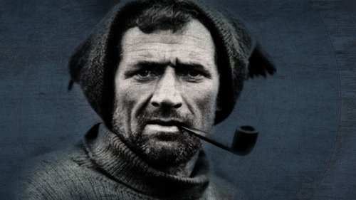
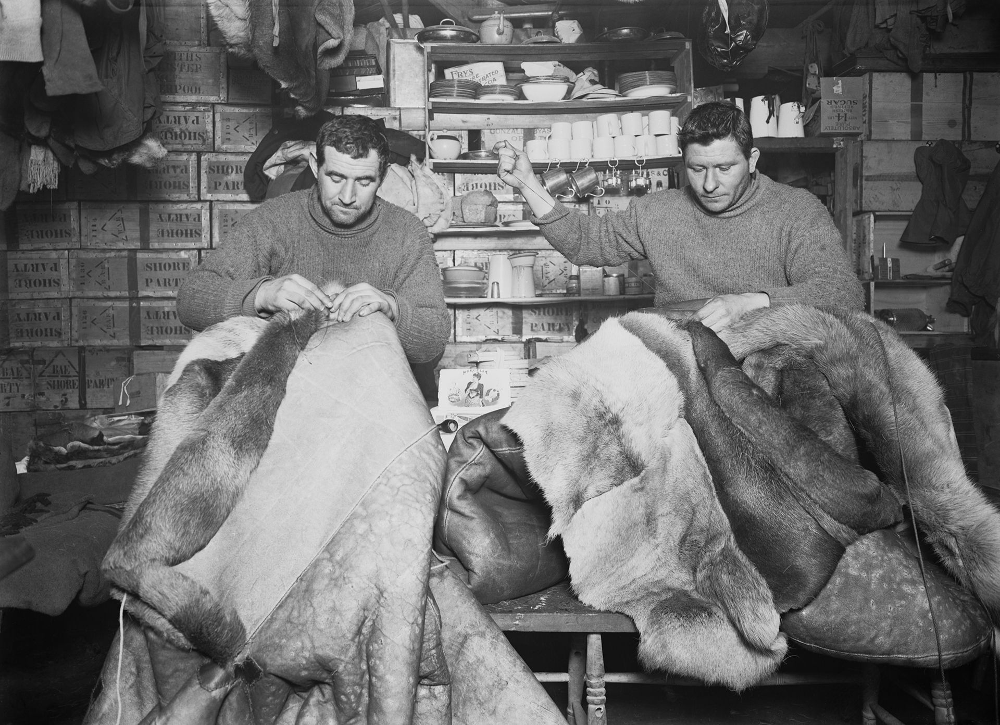
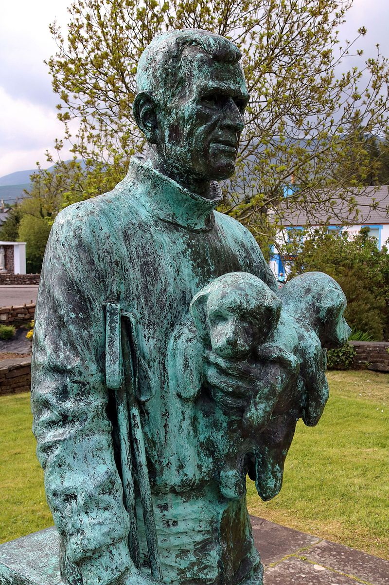
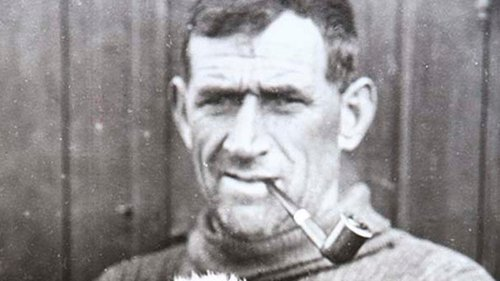

Tom Crean
The Man
Thomas Crean was born in 1877 in the farming area of Gurtuchrane near the village of Annascaul on Corca Dhuibhne in County Kerry, Ireland, to Patrick and Catherine (née Courtney) Crean. One of ten siblings, he attended the local Catholic school (at nearby Brackluin), leaving at the age of 12 to help on the family farm.
At the age of 15, he enlisted in the Royal Navy at the naval station in nearby Minard Inlet, possibly after an argument with his father. His enlistment as a boy second class is recorded in Royal Navy records on 10 July 1893, ten days before his 16th birthday, albeit without his parents' consent.
In 1901 he was stationed in New Zealand, and volunteered to become a member of Robert Falcon Scott’s 1901-1904 Antarctic expedition on the Discovery. During the Antarctic winter of 1902 the ship became locked in the ice and Crean and the majority of the crew were trapped there until February 1904. In 1910 Crean was recruited by Scott for his Terra Nova Expedition. Crean made an 18 hour trek in desperate conditions to save the life Lieutenant Evans, a feat for which he was awarded the Albert Medal. When Scott’s party did not return from the Pole, Crean was one of the rescue party who discovered their remains in November 1912.
The Life
Crean's initial naval apprenticeship was aboard the training ship Impregnable at Devonport. In November 1894, he was transferred to Devastation. By his 18th birthday, in 1895, Crean was serving in Royal Arthur, and rated ordinary seaman. Less than a year later, he was in Wild Swan as an able seaman, and later joined the Navy's torpedo school ship, Defiance. By 1899, Crean had advanced to the rate of petty officer, second class and was serving in Vivid. In February 1900, Crean was posted to the torpedo vessel Ringarooma, which was part of the Royal Navy's New Zealand Squadron based in the South Island. On 18 December 1901, he was demoted from petty officer to able seaman for an unspecified misdemeanour. In December 1901, the Ringarooma was ordered to assist Robert Falcon Scott's ship Discovery when it was docked at Lyttelton Harbour awaiting to departure to Antarctica. When an able seaman of Scott's ship deserted after striking a petty officer, a replacement was required; Crean volunteered, and was accepted.
Crean’s third and final Antarctic expedition was under the command of Ernest Shackleton. The expedition sat sail on board the Endurance in 1914. The ship became trapped in ice in January 1915, eventually being crushed by ice and sinking in November of the same year. The crew escaped in life boats, arriving on Elephant Island in April 1915. Crean was then one of the six-man crew of the lifeboat James Caird which went to summon rescuers from the whaling station in South Georgia. They landed on the north side of the island, and had to climb over the mountainous spine to reach the station on 20 May. The twenty-two crewmen stranded on Elephant Island were rescued.

The Legacy
Tom Crean left behind him, a great legacy which includes
- Mount Crean 8,630 feet (2,630 m) in Victoria Land Crean Glacier on South Georgia.
- An eight-part television series, The Last Place on Earth, told the story of Scott's expedition to the South Pole. Hugh Grant and Max von Sydow starred with Irish actor Daragh O'Malley, who portrayed Tom Crean.
- A one-man play, Tom Crean – Antarctic Explorer, has been widely performed since 2001 by author Aidan Dooley, including a special showing at the South Pole Inn, Annascaul, in October 2001. Present were Crean's daughters, Eileen and Mary, both in their 80s. Apparently he never told them stories of his exploits; according to Eileen: "He put his medals and his sword in a box ... and that was that. He was a very humble man".
- In July 2003, a bronze statue of Crean was unveiled across from his pub in Annascaul. It depicts him leaning against a crate whilst holding a pair of hiking poles in one hand and two of his beloved sled dog pups in the other.
- The Dingle Brewing Company produce a "Tom Crean Lager", named in his honour.
More photos
